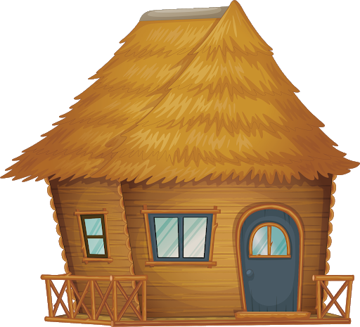
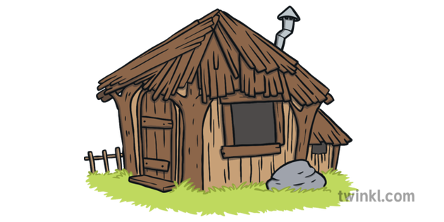

Once upon a time there were three little pigs and the time came for them to leave home and seek their fortunes. Before they left, their mother told them " Whatever you do , do it the best that you can because that's the way to get along in the world.
The first little pig built his house out of straw because it was the easiest thing to do. The second little pig built his house out of sticks. This was a little bit stronger than a straw house. The third little pig built his house out of bricks.
One night the big bad wolf, who dearly loved to eat fat little piggies, came along and saw the first little pig in his house of straw. He said "Let me in, Let me in, little pig or I'll huff and I'll puff and I'll blow your house in!" "Not by the hair of my chinny chin chin", said the little pig. But of course the wolf did blow the house in and ate the first little pig.
The wolf then came to the house of sticks. "Let me in ,Let me in little pig or I'll huff and I'll puff and I'll blow your house in" "Not by the hair of my chinny chin chin", said the little pig. But the wolf blew that house in too, and ate the second little pig.
The wolf then came to the house of bricks. " Let me in , let me in" cried the wolf "Or I'll huff and I'll puff till I blow your house in" "Not by the hair of my chinny chin chin" said the pigs. Well, the wolf huffed and puffed but he could not blow down that brick house.
But the wolf was a sly old wolf and he climbed up on the roof to look for a way into the brick house.
The little pig saw the wolf climb up on the roof and lit a roaring fire in the fireplace and placed on it a large kettle of water.

When the wolf finally found the hole in the chimney he crawled down and KERSPLASH right into that kettle of water and that was the end of his troubles with the big bad wolf.
The next day the little pig invited his mother over . She said "You see it is just as I told you. The way to get along in the world is to do things as well as you can." Fortunately for that little pig, he learned that lesson. And he just lived happily ever after!